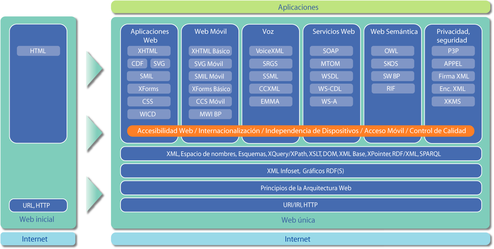

El W3C desarrolla Estándares Web y Pautas
El W3C trata de alcanzar su objetivo principalmente a través de la creación de Estándares Web y Pautas. Desde 1994, el W3C ha publicado más de ciento diez estándares, denominados Recomendaciones del W3C. El W3C también está involucrado en tareas de educación y difusión, y en el desarrollo de software, sirviendo a su vez como foro abierto de discusión sobre la Web. Para que la Web alcance su máximo potencial, las tecnologías Web más importantes deben ser compatibles entre sí y permitir que cualquier hardware y software, utilizado para acceder a la Web, funcione conjuntamente. El W3C hace referencia a este objetivo como "interoperabilidad Web". Al publicar estándares abiertos (no propietarios) para lenguajes Web y protocolos, el W3C trata de evitar la fragmentación del mercado y, por lo tanto, la fragmentación de la Web.
El lenguaje HTML basa su filosofía de desarrollo en la diferenciación. Para añadir un elemento externo a la página (imagen, vídeo, script, entre otros.), este no se incrusta directamente en el código de la página, sino que se hace una referencia a la ubicación de dicho elemento mediante texto. De este modo, la página web contiene solamente texto mientras que recae en el navegador web (interpretador del código) la tarea de unir todos los elementos y visualizar la página final. Al ser un estándar, HTML busca ser un lenguaje que permita que cualquier página web escrita en una determinada versión, pueda ser interpretada de la misma forma (estándar) por cualquier navegador web actualizado.
Web para todos
El valor social que aporta la Web, es que ésta hace posible la comunicación humana, el comercio y las oportunidades para compartir conocimiento. Uno de los objetivos principales del W3C es hacer que estos beneficios estén disponibles para todo el mundo, independientemente del hardware, software, infraestructura de red, idioma, cultura, localización geográfica, o habilidad física o mental.
Web desde cualquier sitio
La cantidad de dispositivos diferentes para acceder a la Web ha crecido exponencialmente. Actualmente, los teléfonos móviles, teléfonos inteligentes, PDAs, sistemas de televisión interactiva, sistemas de respuesta de voz, puntos de información e incluso algunos pequeños electrodomésticos pueden acceder a la Web. La misión de la Iniciativa de Web Móvil del W3C, iniciada en 2005, es hacer el acceso a la Web desde cualquier dispositivo algo tan sencillo, fácil y práctico como lo es desde un dispositivo de sobremesa.
Confianza
Para que la Web sea un medio realmente útil en las relaciones sociales, los usuarios deben poder confiar en terceros que hayan ganado su confianza. Mientras la tecnología no pueda garantizar la confianza, debería al menos permitir relaciones seguras con terceras partes en las que se confíe, ya sean personas, organizaciones o servicios. Uno de los objetivos a largo plazo del W3C es promover tecnologías que hagan posible un entorno más colaborativo, una Web donde la responsabilidad, la seguridad, la confianza, y la confidencialidad sean posibles, y en la que las personas participen de acuerdo con sus requisitos y preferencias de privacidad.
Base de conocimiento
La Web no es solamente un inmenso libro donde la gente puede buscar, navegar y ver información. Es también una extensa base de datos, diseñada cuidadosamente, que puede permitir a los ordenadores hacer un trabajo más útil. Al desarrollar una Web cuyo contenido sea procesable tanto por humanos como por máquinas, el W3C espera que sea más fácil resolver ciertos problemas que, de otra forma, serían demasiado tediosos y complicados.
Tecnología
Para conseguir el objetivo de una Web única, las especificaciones para los formatos y protocolos Web han ser compatibles unas con otras y a su vez permitir que (cualquier) hardware y software, utilizado para acceder a la Web, funcione conjuntamente. El W3C diseña y promueve formatos y protocolos abiertos (no-propietarios) e interoperables para evitar la fragmentación del mercado que tuvo lugar en el pasado.
